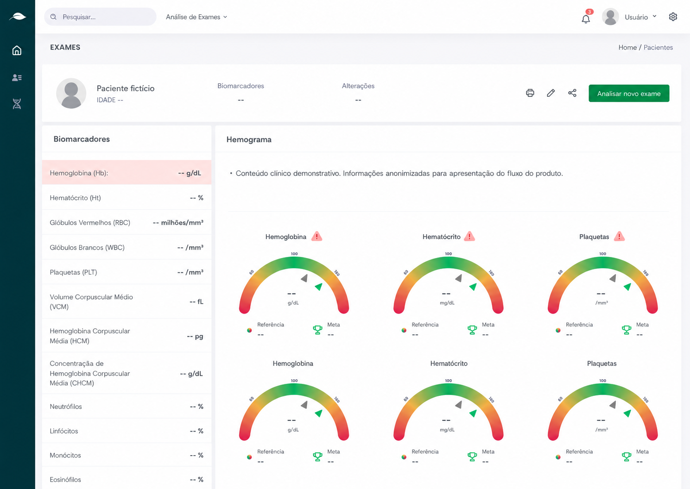

Healthcare · Inteligência Artificial
Análise Laboratorial Inteligente
IA para interpretação de exames laboratoriais
Visão geral
Estruturei um produto de IA para acelerar a interpretação de exames laboratoriais, atuando desde a definição da experiência e dos fluxos até os requisitos, o backlog e a documentação funcional para o desenvolvimento.
- Meu papel
- Product Owner · UX/UI Design
- Segmento
- Healthcare · IA
- Principais entregas
- Product Discovery · UX/UI · Requisitos · Backlog · MVP

Resumo
Transformei uma necessidade clínica complexa em uma proposta de produto clara: reduzir o esforço necessário para interpretar exames, sem substituir a avaliação médica. O trabalho conectou visão de produto, experiência do usuário e preparação do escopo para o desenvolvimento.
O produto
Análise Laboratorial Inteligente é um produto de IA desenvolvido para acelerar a interpretação de exames laboratoriais. A solução transforma o conteúdo de exames em PDF em informações estruturadas, destaca biomarcadores alterados, apresenta gráficos e permite acompanhar a evolução clínica do paciente ao longo do tempo.
O problema
Exames extensos exigiam que o médico localizasse manualmente dezenas de biomarcadores, comparasse valores de referência e reconstruísse a evolução do paciente entre documentos. Além de consumir tempo, esse processo aumentava o esforço cognitivo justamente no momento da tomada de decisão clínica.
Minha atuação
Atuei desde a definição da jornada até a preparação do produto para o desenvolvimento, equilibrando necessidades clínicas, viabilidade técnica e clareza de uso.
- definição e priorização do escopo do MVP;
- mapeamento da jornada, fluxos, estados e exceções;
- organização da arquitetura da informação;
- criação de protótipos e validação da experiência;
- levantamento de regras de negócio e requisitos funcionais;
- criação de critérios de aceite e organização do backlog;
- refinamento das funcionalidades com a equipe de desenvolvimento.
Resultado esperado
Reduzir o tempo de interpretação dos exames, facilitar a identificação de alterações relevantes e oferecer ao médico uma visão mais clara da evolução dos biomarcadores — mantendo o exame original acessível para conferência e rastreabilidade.
Do problema à interface
Principais decisões de produto
As telas são consequência das decisões. Cada escolha de interface responde a uma necessidade clínica ou operacional identificada durante a estruturação do produto.
Hierarquia clínica
Alterações relevantes primeiro
Rastreabilidade
A fonte permanece conectada
Leitura visual
Do valor isolado à evolução
Priorizar os biomarcadores críticos
A hierarquia da análise foi desenhada para colocar alterações relevantes em evidência. O objetivo era reduzir o tempo de varredura do exame e direcionar rapidamente a atenção do médico para o que exigia avaliação.
Garantir contexto e rastreabilidade
O exame precisava permanecer vinculado ao paciente correto e disponível para conferência. Por isso, o fluxo preserva o contexto clínico e o acesso à fonte original antes e depois do processamento.
Transformar dados em leitura visual
Valores isolados dificultam a comparação. A apresentação em gráficos e faixas de referência torna a leitura mais direta e cria uma base consistente para acompanhar a evolução de cada biomarcador ao longo do tempo.
Competências demonstradas
- Product Discovery
- Definição de MVP
- Priorização de produto
- Gestão de backlog
- Requisitos funcionais
- Regras de negócio
- Critérios de aceite
- User Flows
- Arquitetura da informação
- UX/UI Design
- Prototipação
- Colaboração com a equipe de desenvolvimento